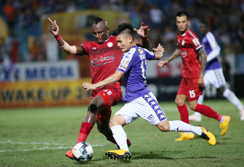

Quyết định huỷ án "treo sân" của Ban giải quyết khiếu nại giúp hơn 13.000 người hâm mộ, trong đó đa phần là CĐV Hà Nội, có cơ hội tới sân theo dõi màn so tài giữa hai đội đang dẫn đầu V-League. Không chỉ áp đảo trên khán đài, dưới sân đội bóng thủ đô cũng tạo ra thế trận lấn lướt. Hiệp một họ cầm bóng gần 70%.
Trong 15 phút đầu tiên, Hoàng Vũ Samson có hai cơ hội dứt điểm thuận lợi nhưng không thắng được Thanh Thắng. Người đá cặp cùng anh trên hàng công là Omar cũng vô duyên. Phút 28, sau khi thoát xuống đối mặt với thủ môn của TP HCM, tân binh của Hà Nội chậm dứt điểm, để Ewonde lao về cản phá.
TP HCM vẫn trung thành với lối chơi phòng ngự phản công. Nhưng dù tập trung số đông ở phần sân nhà, đội khách cũng không thể giúp Thanh Thắng giữ sạch được mành lưới trước sức tấn công dồn dập của Hà Nội. Từ pha tranh chấp quyết liệt ở giữa sân, các cầu thủ chủ nhà chiếm được bóng. Quang Hải nhanh chân tỉa xuống cho Hoàng Vũ Samson băng vào cấm địa, đánh bại thủ thành của TP HCM trong thế đối mặt phút 44
Cầu thủ nhập tịch của Hà Nội không kịp ăn mừng bàn thắng bởi ngay khi bóng rời chân, anh đã bị Hữu Tuấn đạp từ phía sau. Sau ít phút được bác sĩ chăm sóc, chân sút của Hà Nội có thể tiếp tục thi đấu
Dính bàn thua, TP HCM buộc phải đẩy cao đội hình trong hiệp hai. Tuy nhiên, ở khu giữa sân, ngoài Văn Thuận, các cầu thủ khác đều thi đấu dưới phong độ, dẫn tới không thể kiểm soát thế trận. Hy vọng của họ dồn cả vào Huỳnh Kesley. Chân sút 37 tuổi vẫn có những pha xử lý bóng khéo léo nhưng thể lực không đủ để có thể tạo ra đột biến trước hàng thủ trẻ trung của Hà Nội.
TP HCM chuyển qua chơi bóng bổng, hướng tới ngoại binh Vinicius. Tuy nhiên, Đình Trọng và Duy Mạnh đã chơi xuất sắc, phong toả thành công ngoại binh của đội khách. Suốt hiệp hai, chân sút số 94 chỉ có một cú đánh đầu vọt xà ngang trong gang tấc ở phút 89.
Hà Nội không còn lấn lướt nhưng vẫn là đội tạo ra nhiều cơ hội ngon ăn hơn. Phút 59, Quang Hải tung chân vô lê ngay sát vạch 16m50, đưa bóng đi chệch mục tiêu trong gang tấc. Oseni cũng dứt điểm chệch cột dọc chút xíu. Phút 75 cầu thủ mới vào sân thay người Thái Quý tạt vừa tầm, loại toàn bộ hàng thủ TP HCM nhưng Hùng Dũng đưa chân đệm hụt dù không bị ai theo kèm. Bóng sau đó văng vào tay anh rồi đi vào lưới, và tất nhiên không được trọng tài Ngô Quốc Hưng công nhận
Thắng 1-0, Hà Nội vươn lên chiếm ngôi đầu giải vô địch quốc gia Wake-up 247 với 17 điểm - nhiều hơn một điểm so